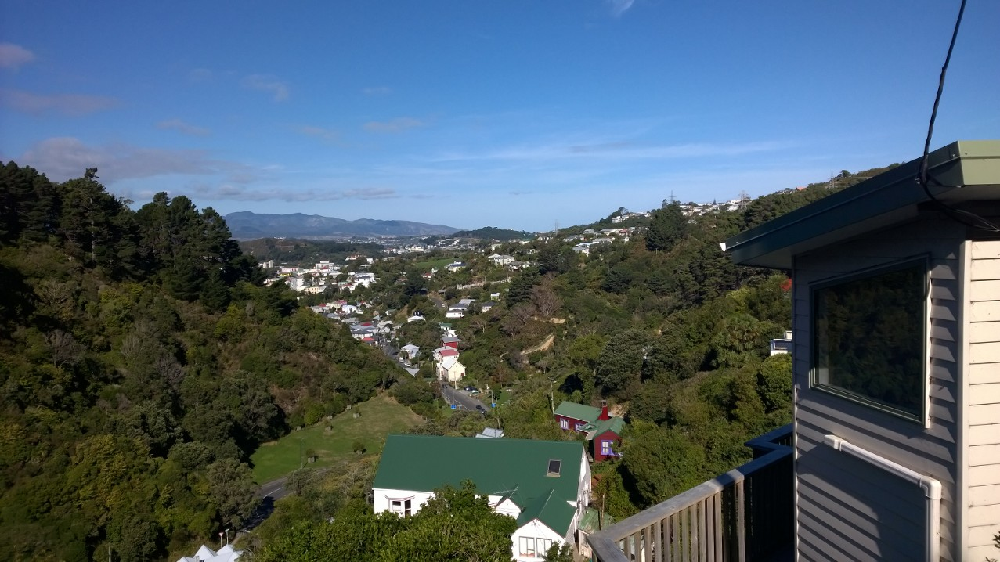
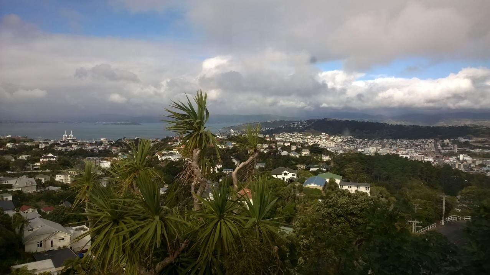
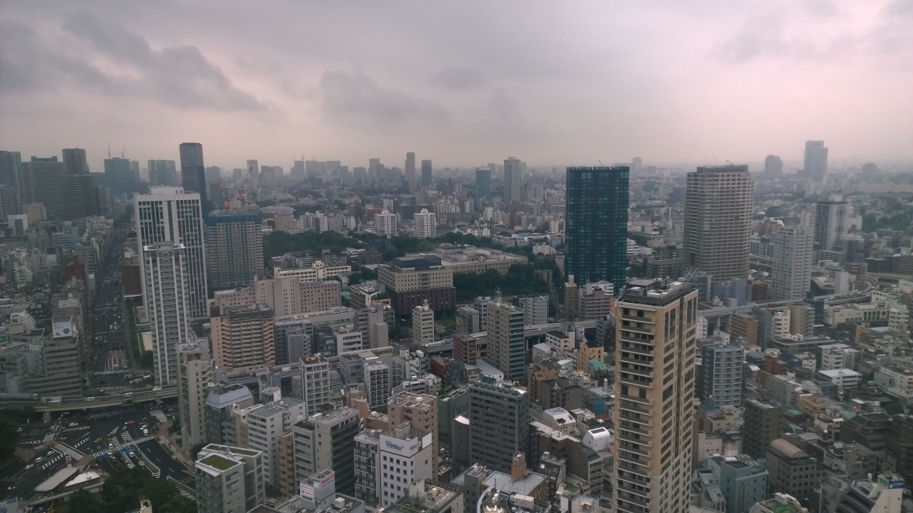
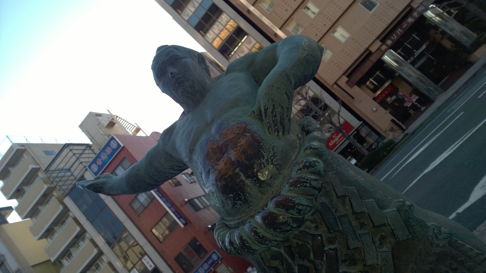

Being Back
I'm still not sure how I feel about this
After four months of being busy with study and work I’ve finally had time to sit down and think about being back in New Zealand. To answer the obvious question straight off: Yes, I want to return to Japan but no, I don’t have any definite plans. Particularly since I’m a poor student and still have a year and a half of my degree to do!

Reflection (for want of a better word)
So what did I learn last year? I won’t spend too long on this since it skates dangerously close to canned clichés and pointless prattling, but I still think it’ll be fun for me to look back at in 10 years or so.
- Japanese! It’s the big obvious one … I’m flicking through my first-year textbook now and wondering how it ever seemed hard
- Independence. It was my first time living alone, so I started maybe possibly picking up the ghost of a few time management skills. Having said that, I’m still at the stage of tossing up whether to do housework or homework for half an hour, then getting annoyed because I could have finished one in the time it took me to decide
- Cooking. My skill level has improved tremendously since my first hesitant experiments, and I’ve also become a lot faster — it’s great to be able to whip something up in half an hour rather than spending hours just chopping vegetables
- Aikido. I started it thinking I’d just do it for a year and then go back to kung fu, but I ended up really enjoying it and wanting to continue. I’m currently doing both martial arts at once and finding that although the concepts complement each other, it’s all too easy to mix up similar moves
- Culture. I was rather put off the Japanese working culture (I’ll come back to that) but it was awesome going to temples and shrines, uni events and tourist spots. It was particularly fascinating to see the influence of Western culture and how it’s being blended with traditional values
- Friendship. My still-underwhelming social skills are much improved, partly because I was forced to put myself out there and make friends, and partly because I met so many amazing people. Plus, I now have friends all over the world!
Well, that list was longer than I expected. Time for another photo of Wellington.

Japan and my future
Perhaps my biggest goal for last year was to decide whether Japan is somewhere I’d like to spend my life, or just a cool place to visit. I’ve come away with some idea of the working culture, and I’m not at all sure it would suit me. I heard a lot about companies with one “no overtime day” per week, and the anecdotal reason for Japan’s large number of public holidays is “people have to be forced to take time off work”. The general idea seems to be that the more you work, the higher you’ll be promoted — and even taking your statutory holiday can damage your chances of promotion. I won’t say too much because I don’t really know much and because, in all fairness, this culture is changing (partly due to the new generation of Western-influenced people who consider the traditional working culture restrictive and old-fashioned). Still, I don’t think I would do well in an environment that intense.
Having said that, I very much enjoyed living in Tokyo, so if I could find an upstart software company with a more Western culture then I’d certainly be keen to try working there. With this in mind, I’m thinking about applying to teach Japanese in Japan for a year or two after uni — I’ve heard good things about the JET programme, and I’d probably get a much better idea of what the working lifestyle is like.

Them feels
I have to say, I have strongly mixed feelings about being back (to the point where I wondered about titling this post “Fifty Shades of Back” … although if that book and movie are half as terrible as reviews make out, I don’t want that association anywhere near here). I wish all my friends lived in the same place, although having moved from Christchurch to Wellington for uni that’s nothing new. I wish you could get Japanese ingredients more easily and cheaply in New Zealand, and and vice versa while I was there. I wish Wellington had a more convenient public transport system, but I wouldn’t want to sacrifice the city’s green-ness and compact-ness for it. I’m happy to be back doing Computer Science, but sad to have so few opportunities to speak Japanese.
Anyway, without being too melodramatic I do feel like this is the first time I’ve actually made a home somewhere and then moved away (for some reason going off to uni doesn’t count). Even after four months it’s quite a weird feeling, but given my love of both countries (and desire to travel more widely) I suspect it’s only the first of many times this will happen.
In other news …
I’ve finally published my personal website! It’s pretty barebones at the moment, but I plan to keep working on it. I also plan to keep blogging every once in a while, although I’m not sure what I’ll actually write about. I guess I’ll throw some stuff at the wall and see what sticks. So stay around … you may be surprised.
